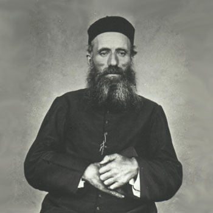
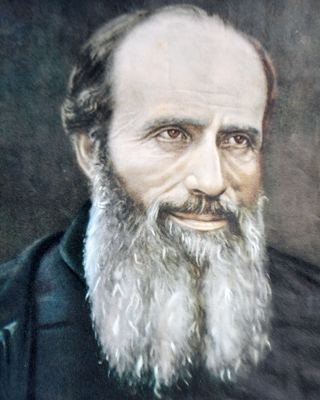

Misionari, pastiri i mistici (Pojedinačna proglašenja)
Svećenik
Sv. Jakov Berthieu
1838. – 1896.
Francuski svećenik nakon godina župne službe pristupio je isusovcima i otputovao na Madagaskar. U tamošnjim je zajednicama djelovao kao misionar te podnio mučeništvo, ostavši poznat kao mučenik Crvenog otoka.

Izvor slike


Izvor slike
- Spomendan
- 8. lipnja
- Zaštitništvo
- Nije navedeno u izvoru
- Životni vijek
- 1838. – 1896.
- Djelovanje
- Misije i evangelizacija · Bolesnici i umirući · Mučeništvo
- Razdoblje
- 19. stoljeće
- Datum rođenja
- 27.11.1838.
- Mjesto rođenja
- Montlogis, Polminhac, Auvergne, Francuska
- Datum smrti
- 08.06.1896.
- Mjesto smrti/mučeništva
- Ambiatibe, Madagaskar
- Okolnosti smrti/mučeništva
- Ubijen hicima iz vatrenog oružja nakon odbijanja odreknuća vjere.
- Uloga
- Svećenik
- Mučenik
- Da
- Ostale oznake
- Misionar na Madagaskaru
- Pripadnost
- Isusovac
- Drugi oblici imena
- Jacques Berthieu · Jacques · James Berthieu
Životopis
Sveti Jakov (Jacques) Berthieu, francuski isusovac, misionar i mučenik, prvi madagaskarski svetac, poznat i kao „mučenik Crvenog otoka“, rođen je 27. studenoga 1838. u Polminhacu (departman Cantal, Auvergne), na jugu središnje Francuske, kao jedan od sedmero djece pobožne seljačke obitelji. U rodnom selu završio je osnovnu školu, a zatim su njegov odgoj preuzela Školska braća u susjednom Aurillacu. Školovao se u sjemeništu Pleaux i bogosloviji Saint-Flour (departman Cantal). Tamo je zaređen i za svećenika, 21. svibnja 1864. Bio je devet godina kapelan u naselju Roannes-Saint-Mary (departman Cantal), a 31. listopada 1873. pridružio se u Pauu (jugozapadna Francuska) isusovcima. U Marseilleu se 26. rujna 1875. ukrcao na brod i otplovio kao misionar na Madagaskar, otočnu zemlju u Indijskom oceanu, smještenu uz obalu jugoistočne Afrike. Najprije se zadržao na susjednim otocima Réunion i Sainte-Marie, gdje je učio malgaški jezik i pripremao se za svoj apostolski rad na Madagaskaru. Na otoku Sainte-Marie (danas Nosy Boraha, dio Madagaskara) ostao je do ožujka 1880. Početak misionarskog djelovanja za 37-godišnjeg isusovca nipošto nije bio lagan. Klima, jezik, kultura, sve su to za njega bile potpuno nove stvari. Bio je seljačkog podrijetla pa je bio sretan što zna barem uspješno obrađivati vrt. Francuske vlasti zabranile su 1881. djelovanje isusovaca na svojim teritorijima pa se otac Jacques Berthieu premjestio na otok Madagaskar, tada neovisno kraljevstvo. Najprije je pošao u Tamatave (Toamasinu), glavni grad regije Atsinanana, na istočnoj obali Madagaskara, a zatim u glavni madagaskarski grad Antananarivo. Poglavari su ga potom poslali među pripadnike gorštačke etničke skupine Betsileo, u udaljenu misiju Ambohimandroso (središnji Madagaskar). Kad je 1883. izbio prvi francusko-malgaški rat, otac Jacques morao je napustiti svoju misiju.
Postao je 1886. poglavar misije u Ambositri (središnji Madagaskar), 250 kilometara južno od glavnog grada. Tamo je boravio pet godina, osnivao misijske postaje i obratio mnoge nevjernike na kršćansku vjeru. Nastojao se približiti svim ljudima, bavio se poučavanjem i socijalnim radom, a naročitu brigu vodio je o bolesnicima i gubavcima. Premješten je 1891. sjeveroistočno od glavnog grada, gdje je upravljao s 18 misijskih postaja, smještenih u najzabačenijim, nepristupačnim krajevima otoka. Francuzi su 1894. okupirali Madagaskar i proglasili ga svojim posjedom. Pripadnici ustaničkog pokreta Menalamba („Crveni šal“), borili su se protiv francuske dominacije na Madagaskaru, ali i protiv kršćana. Njihove jedinice napadale su Europljane, ali i malgaške kršćane. Otac Berthieu pokušao je staviti kršćane pod zaštitu francuske vojske, ali francuski pukovnik Combes, koji je zapovijedao u tom kraju, to je odbio. Svećenik se tada sa svojim vjernicima uputio prema Antananarivu i zaustavio se u selu Ambohibemasoandru. U to selo su 7. lipnja 1896. upali ratnici Menalambe i uhitili oca Berthieua, koji se sakrio kod jednog prijatelja protestanta. Uhvatili su ga, skinuli mu reverendu, zlostavljali ga i odvukli u šumu. Tjerali su ga nekih desetak kilometara i usput ga mučili. Predložili su mu tada da odustane od naviještanja evanđelja pa će mu pokloniti život. On je poput prvih kršćanskih mučenika odvratio: „Radije izabirem smrt.“ Naglas i raširenih ruku molio je za svoje ubojice, a oni su ga nakon nekoliko promašaja ustrijelili na današnji dan, 8. lipnja 1896, u selu Ambiatibeu, 50 kilometara sjeverno od Antananariva. Mučenikovo tijelo bacili su u rijeku Mananaru i ono nikada nije pronađeno. Blaženim ga je 17. listopada 1965. proglasio papa Pavao VI, a svetim 21. listopada 2012. papa Benedikt XVI. Sveti, mučenički lik oca Jacquesa Berthieua i danas bdije nad Crvenim otokom, nad madagaskarskim katoličkim misijama i ustanovama.
Život i nasljeđe
Berthieuovo misionarsko djelovanje obuhvaćalo je školstvo, građevinske radove, vrtove i navodnjavanje. U prikazu Družbe naglašava se da se morao brinuti i za vrlo praktične potrebe zajednica. Pouka u vjeri nije se odvijala odvojeno od svakodnevne borbe za hranu, zdravlje i obrazovanje djece. Za takav je rad trebalo učiti jezik, upoznati običaje i izgraditi povjerenje s mjesnim učiteljima i katehistima.
Sačuvana svjedočanstva suradnika opisuju ga kako se redovito vraća molitvi pred Presvetim Sakramentom. Posebno je štovao Srce Isusovo te se prije odlaska u misije tom Srcu posvetio u Paray-le-Monialu. U isto vrijeme nije prestao učiti vjeronauk: jednome je učitelju objasnio da se njegov sadržaj nikada ne može dovoljno duboko upoznati. Takva pojedinost povezuje njegov osobni duhovni život s trajnom pripravom za poučavanje. Nije sebe smatrao čovjekom koji je odlaskom iz Europe već završio sve potrebno učenje. U zajednicama je redovito podupirao rad mjesnih katehista i učitelja.
Pročitaj više na izvornoj stranici ↗